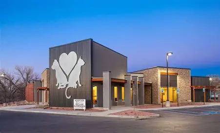
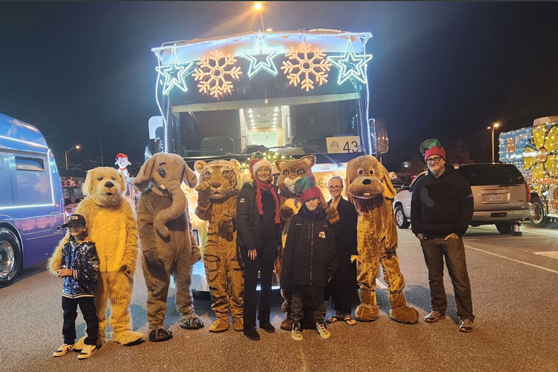

SDA Centre was founded in 2006 and is dedicated to saving dogs being abandoned on the streets and rescuing those who already are. We operate under a simple principle: every dog deserves a safe home where they are loved, protected from abuse, and given the chance to the life they deserve. At the SDA Centre, we believe every dog deserves a second chance.
To build a more compassionate future, we work to educate the public and inspire action. Through regular events held across Ireland, we promote responsible dog ownership, raise awareness about animal welfare, and show communities how they can make a real difference.
At the heart of everything we do is our founder, whose vision for a kinder, safer Ireland led to the creation of the Sligo Dog Adoption Centre. That dedication continues to guide our mission, shaping every rescue, every rehabilitation, and every successful adoption story.

The SDA Centre takes part in all kinds of events across Ireland, and they're a huge part of what makes our community so special. From fun parades and lively fundraising days to adoption events where people meet their future dogs, there's always something happening. We also love visiting schools for hands on learning sessions, giving kids the chance to meet our dogs and learn what they do.
Every bit of support we receive during these events goes straight into keeping our centres running and making sure our dogs get everything they need. Whether it's training, food, medical care, or improving our facilities, your donations help us give each dog the best possible start before they go on to change someone's life.
And honestly, your support has been incredible. Last year alone, thanks to everyone who showed up, donated, volunteered, or simply spread the word, we raised €3.75 million. That's a massive achievement, and it shows just how much we can accomplish when we work together.

Since opening our doors, the Sligo Dog Adoption Centre has grown into one of Ireland's most trusted and efficient dog-rescue organisations. Every milestone reflects the dedication of our team, volunteers, and the communities that support us.
Dogs rescued since our founding — that's nearly a dog a day given a second chance at life.
Successfully rehomed, finding safe and loving families across the country.
Winner of the European Animal Organisation Award, recognising our commitment to welfare and ethical rescue.
Secondary and Primaryschools visited, delivering talks and workshops that inspire the next generation of animal advocates.
Community events from adoption days to fundraisers, bringing people together to support animal welfare.
Working with local vets, dog trainers, and foster families to ensure every dog receives proper care and rehab.
Of course, we couldn't do this without you. These milestones are great, but it's only the beginning. Join us and help our tail-wagging friends find new beginnings.
There are many ways you can make a difference. Whether you have time, space, or compassion to share — you can help.
Give a dog a permanent loving home.
Provide a temporary safe space while a dog awaits adoption.
Give your time to help care for and walk our dogs.
Every contribution helps fund rescues, vet care, and rehoming.
Join us at our nationwide community and adoption events.
Share our story and help us reach more people across Ireland.